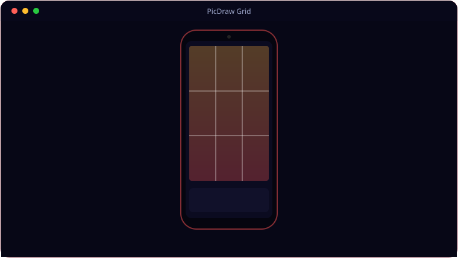

See It In Action
A look inside PicDraw Grid.

What It Does
Everything PicDraw Grid brings to the table.
📁
Albums → Gallery → Viewer
Browse albums, then a gallery grid, then a swipeable full-screen viewer powered by SubsamplingScaleImageView for huge images.
🔲
Four Grid Types
Rule of Thirds, Custom, Pixel Grid and Golden Ratio — with colour, opacity, thickness and a closed border.
🎚️
B&W Effects
Hardware-accelerated ColorMatrix B&W with five presets plus brightness, contrast, R/G/B mix and grain.
⛶
Immersive Full Screen
A full-screen button hides all chrome, keeps the screen awake, and auto-hides controls after four seconds.
🔍
Pinch to Zoom
Native pinch-zoom on high-resolution images without running out of memory.
💾
Save a Copy
Export a gridded copy straight to Pictures/PicDrawGrid via MediaStore.
Get Ready
System requirements.
📱
Minimum
- OS: Android 8.0 (Oreo) or newer
- Memory: 3 GB RAM
- Storage: ~100 MB free
- Screen: Touchscreen, 720p or higher
- Install: allow install from APK (sideload)
- OS: Android 10 (minSdk 29) or newer
✨
Recommended
- OS: Android 12 or newer
- Memory: 6 GB RAM
- Device: Modern Samsung Galaxy (tested on the S20)
- Storage: 200 MB+ free
- Screen: 1080×2400 AMOLED or better
Under the Hood
The details.
| Platform | Native Android (Kotlin), minSdk 29 (Android 10) |
| Grids | Thirds · Custom · Pixel · Golden Ratio + closed border (3px default) |
| B&W | ColorMatrix, 5 presets + sliders, hardware layer |
| Viewer | SubsamplingScaleImageView, immersive full screen, auto-hide |
| Tested on | Samsung Galaxy S20 |
Get PicDraw Grid.
Drawing-reference grids and B&W passes, on your phone — pay once, no subscription.
⬇ Download PicDraw GridPicDrawGrid.apk · £3 one-time · no subscription · Android 10+